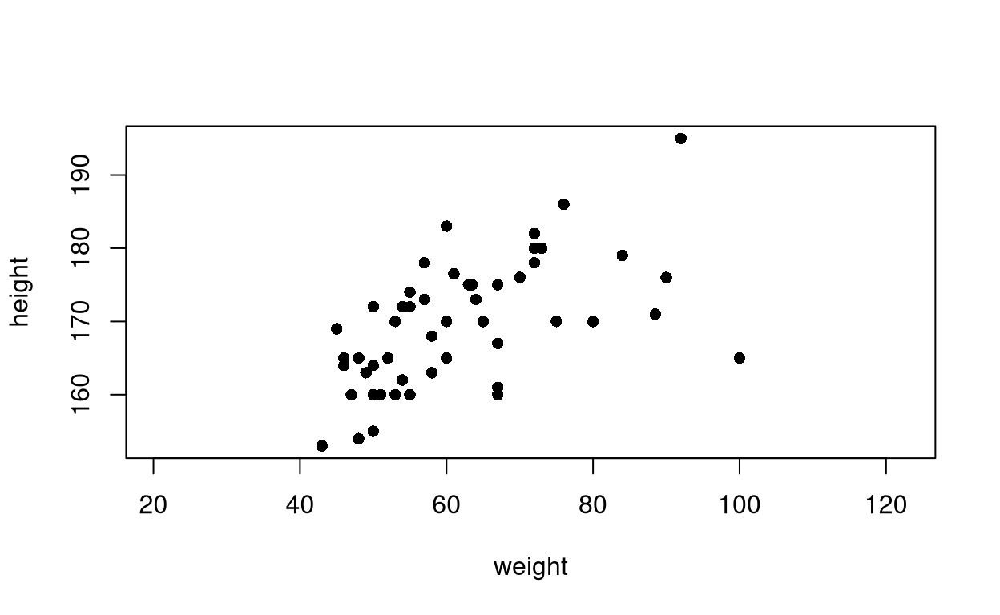
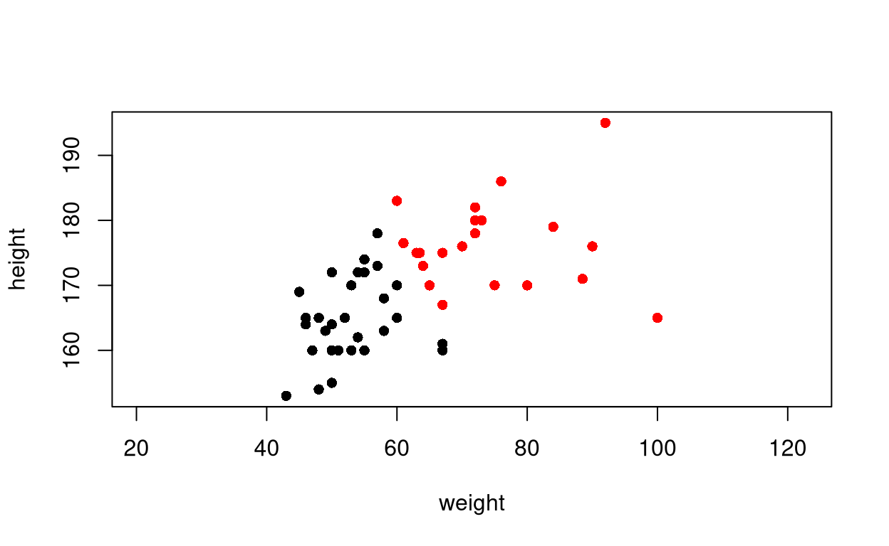
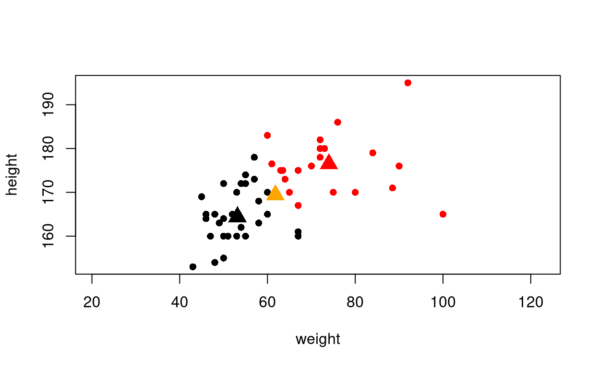
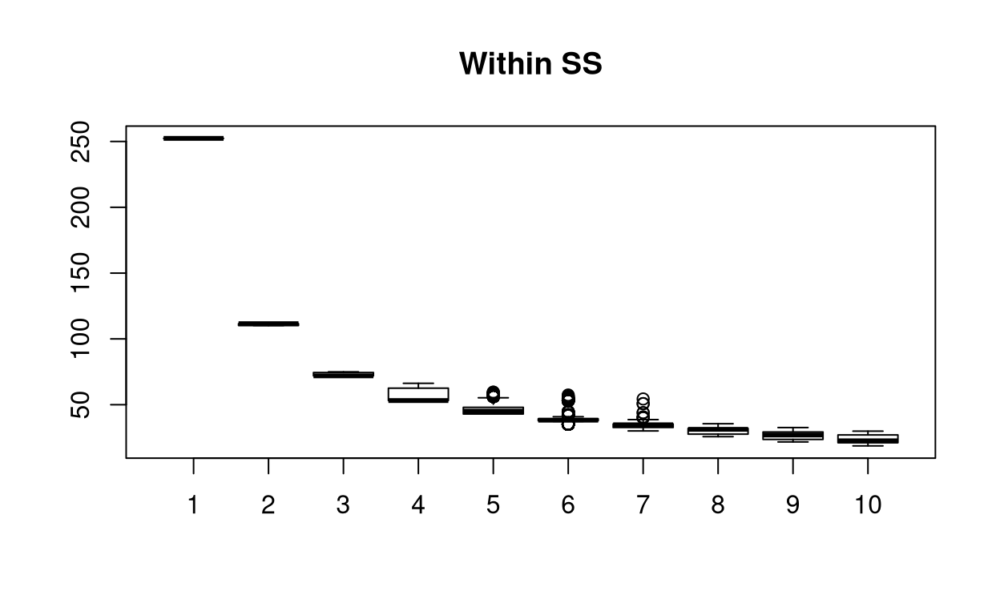
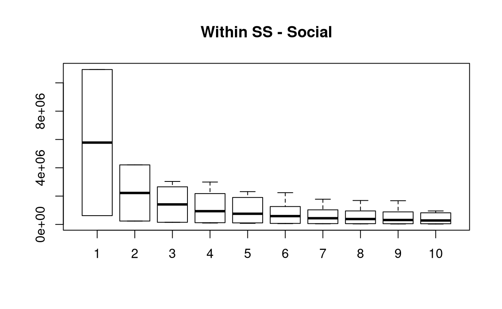
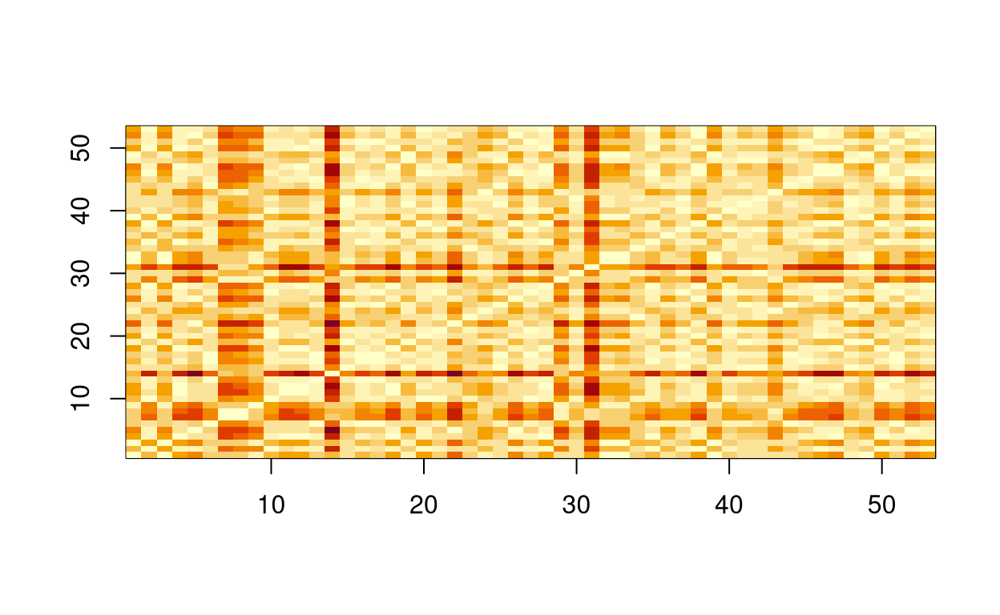
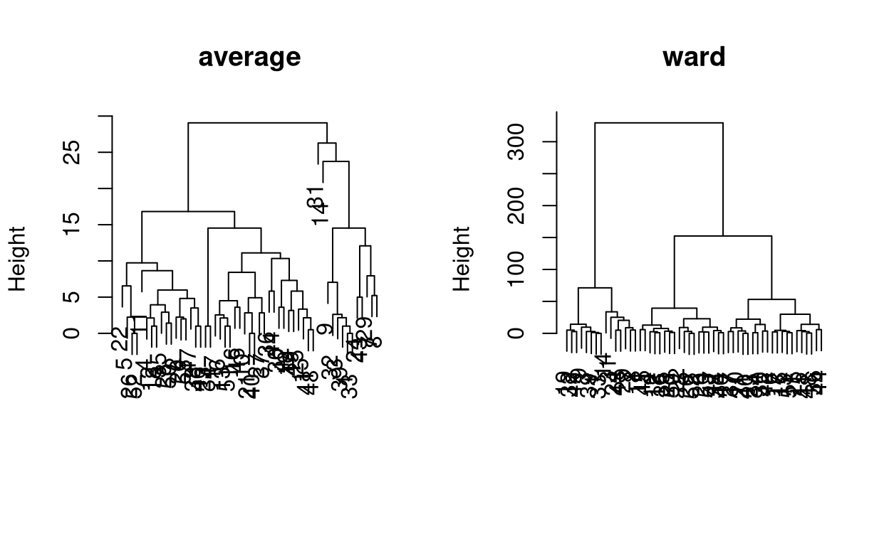
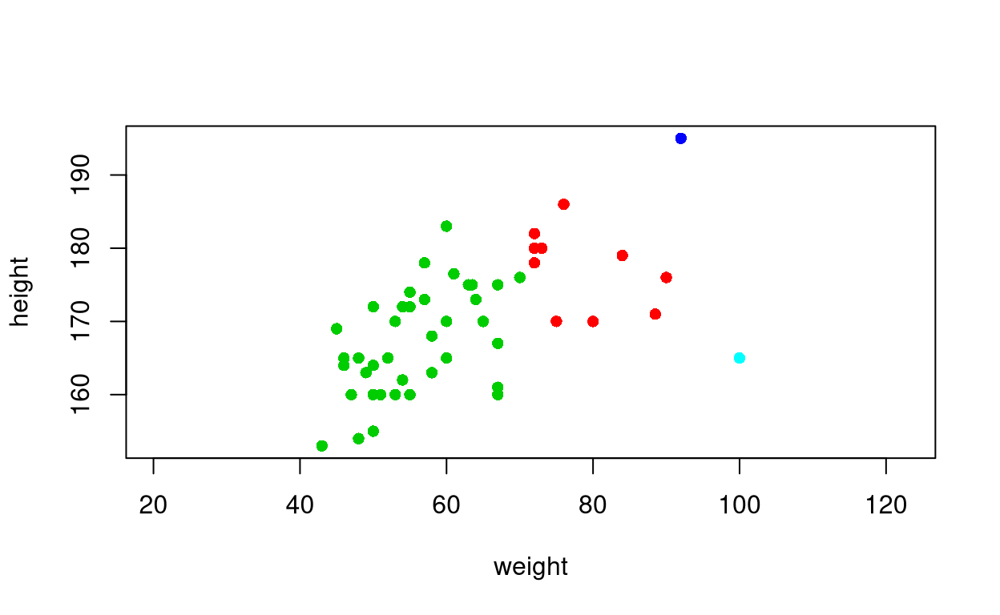
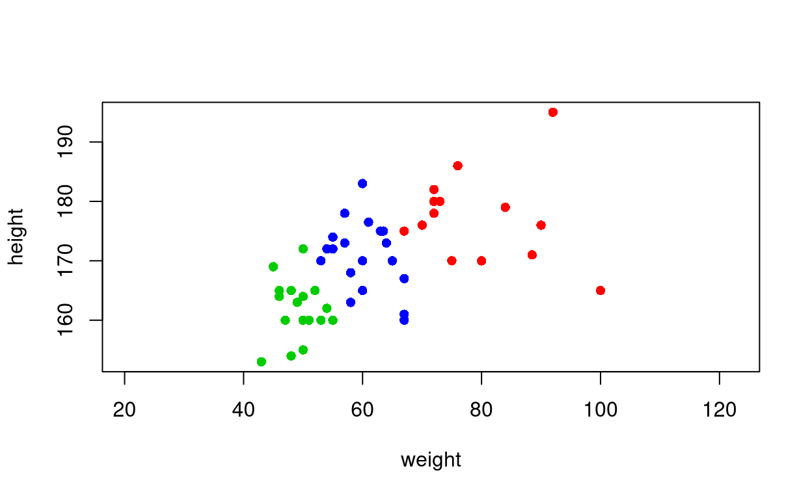

Clustering
Reading data
As it is good practice to do, we load the required library as a first step.
library(plotly)
## Loading required package: ggplot2
##
## Attaching package: 'plotly'
## The following object is masked from 'package:ggplot2':
##
## last_plot
## The following object is masked from 'package:stats':
##
## filter
## The following object is masked from 'package:graphics':
##
## layout
First of all, we ought to import the data.
df <- read.table(file = "../data/cleaneddata.txt", header = TRUE, sep = ",")
We build subsets of the dataset.
df_gender <- df[, 1]
df_country <- df[, 2]
df_bio <- df[, 3:5]
df_social <- df[, 6:8]
Computing distances
We now compute the Euclidean distances between data points.
distances <- dist(df_bio)
We wish to visualise them.
image(as.matrix(distances), x=1:dim(df)[1], y=1:dim(df)[1], xlab="", ylab="")
Notice that
max(distances)
## [1] 64.54456
min(distances)
## [1] 1
Means and Variances
We compute the vectors of means,
colMeans(df_bio)
## age height weight
## 23.90566 169.42453 61.81132
the vector of the variances,
vapply(df_bio, var, FUN.VALUE = double(1L), na.rm = TRUE)
## age height weight
## 4.433237 76.840348 175.934869
the total variances,
sum(vapply(df_bio, var, FUN.VALUE = double(1L), na.rm = TRUE))
## [1] 257.2085
the vector of the means of the social subset,
colMeans(df_social)
## phone facebook instagram
## 279.2453 663.6226 355.0189
the vector of the variances of the social subset,
vapply(df_social, var, FUN.VALUE = double(1L), na.rm = TRUE)
## phone facebook instagram
## 50886.69 465955.35 114396.60
and the total variance of the social subset.
sum(vapply(df_social, var, FUN.VALUE = double(1L), na.rm = TRUE))
## [1] 631238.6
K-Means Clustering
We now plot the data.
plot(df_bio[, 3:2], pch=16, asp=1, xlab = colnames(df_bio)[3], ylab = colnames(df_bio)[2])

and we cluster.
clust_k <- kmeans(x = df_bio[, 3:2], centers = 2)
We wish to inspect the result.
clust_k$iter
## [1] 1
clust_k$cluster
## [1] 2 1 2 1 1 1 2 2 2 1 1 1 1 2 2 1 1 1 2 1 1 1 1 2 2 1 1 1 2 2 2 2 2 1 1 2 1 1
## [39] 2 1 2 2 2 1 1 1 1 2 2 1 1 1 1
clust_k$size
## [1] 31 22
clust_k$centers
## weight height
## 1 53.16129 164.4194
## 2 74.00000 176.4773
clust_k$tot.withinss/dim(df_bio)[1]
## [1] 107.2732
clust_k$totss/dim(df_bio)[1]
## [1] 248.0059
Inspecting graphically…
plot(df_bio[, 3:2], col=clust_k$cluster, asp = 1, pch=16, xlab = colnames(df_bio)[3], ylab = colnames(df_bio)[2])
 and adding some more information
plot(df_bio[, 3:2], col = clust_k$cluster, asp = 1, pch = 16, xlab = colnames(df_bio)[3], ylab = colnames(df_bio)[2])
points(rbind(colMeans(df_bio[, 3:2])), pch = 17, col = "orange", cex = 2)
points(clust_k$centers, pch = 17, col = 1:3, cex = 2)

Try to change the number of clusters and see what happens!
k <- 2
clust_k <- kmeans(x = df_bio[, 3:2], centers = k, nstart = 25)
plot(df_bio[, 3:2], col = clust_k$cluster, asp = 1, pch = 16, xlab = colnames(df_bio)[3], ylab = colnames(df_bio)[2])
points(rbind(colMeans(df_bio[, 3:2])), pch = 17, col = "orange", cex = 2)
points(clust_k$centers, pch = 17, col = 1:3, cex = 2)
We also compare according to gender and country of origin.
table(clust_k$cluster, df_gender)
## df_gender
## Female Male
## 1 26 5
## 2 6 16
table(clust_k$cluster, df_country)
## df_country
## Azerbaijan China Iran Italy Malaysia Serbia Taiwan
## 1 0 11 0 18 1 0 1
## 2 1 3 2 15 0 1 0
Stability Check
It is important to assess the stability of the clustering.
within_ss <- matrix(data = NA, nrow = 1000, ncol = 10)
for (iter in seq.int(from = 1, to = 1000)) {
for (k in seq.int(from = 1, to = 10)) {
curr_clust <- kmeans(x = df_bio, centers = k)
within_ss[iter, k] <- curr_clust$tot.withinss
}
}
We plot the results.
boxplot(within_ss / dim(df_bio)[1], main = "Within SS")

Clustering Social Covariates
We now proceed to cluster the data considering the variables connected with social networks.
clust_social <- kmeans(x = df_social, centers = 3)
We plot the results.
p <- plot_ly(df_social, x = ~phone, y = ~facebook, z = ~instagram, color = ~as.factor(clust_social$cluster)) %>%
add_markers() %>%
layout(scene = list(xaxis = list(title = 'Phone'),
yaxis = list(title = 'Facebook'),
zaxis = list(title = 'Instagram')))
p
We also inspect the results
clust_social$iter
## [1] 2
clust_social$cluster
## [1] 2 3 3 1 1 2 3 2 3 2 1 3 2 3 3 3 3 2 1 3 3 2 3 3 3 2 1 3 3 2 2 3 3 2 3 2 2 2
## [39] 3 2 3 1 3 1 3 2 2 3 2 2 1 2 2
clust_social$size
## [1] 8 21 24
clust_social$centers
## phone facebook instagram
## 1 420.2500 1986.5000 966.8750
## 2 280.6190 107.3333 126.4762
## 3 231.0417 709.4167 351.0417
clust_social$tot.withinss/dim(df_social)[1]
## [1] 150346.7
clust_social$totss/dim(df_social)[1]
## [1] 619328.5
and compare what we have obtained with gender and country data.
table(clust_social$cluster, df_gender)
## df_gender
## Female Male
## 1 4 4
## 2 15 6
## 3 13 11
table(clust_social$cluster, df_country)
## df_country
## Azerbaijan China Iran Italy Malaysia Serbia Taiwan
## 1 0 0 0 8 0 0 0
## 2 0 12 2 5 1 0 1
## 3 1 2 0 20 0 1 0
Moreover, we check the stability of the clustering
within_ss_social <- matrix(data = NA, nrow = 1000, ncol = 10)
for (iter in seq.int(from = 1, to = 1000)) {
for (k in seq.int(from = 1, to = 10)) {
curr_clust <- kmeans(x = df_social, centers = k)
within_ss_social[iter, k] <- curr_clust$tot.withinss
}
}
and plot the results.
boxplot(within_ss_social / dim(df_social), main = "Within SS - Social")

Considerations
We have to make a series on remarks on - cluster instability - label matching - variable standardisation or rescaling - k-medoids algorithms.
Hierarchical Agglomerative Clustering
We compute the distance matrix
d <- dist(df_bio[, 3:2])
and plot the results.
image(as.matrix(d), x = 1:dim(df_bio)[1], y = 1:dim(df_bio)[1], xlab = "", ylab = "")

We compute and plot two different hierarchical clustering linkages.
par(mfrow=c(1,2))
# Average linkage
clusta <- hclust(d, method='average')
plot(clusta, main='average', xlab='', sub='')
# Ward linkage
clustw <- hclust(d, method='ward.D')
plot(clustw, main='ward', xlab='', sub='')

Investigating more,
clusta$merge
## [,1] [,2]
## [1,] -1 -33
## [2,] -21 -40
## [3,] -26 -52
## [4,] -41 -48
## [5,] -39 1
## [6,] -12 -18
## [7,] -13 -51
## [8,] -23 -34
## [9,] -38 -46
## [10,] -28 -50
## [11,] -20 -53
## [12,] -4 6
## [13,] -6 7
## [14,] -15 4
## [15,] -3 5
## [16,] -2 11
## [17,] -5 3
## [18,] -17 13
## [19,] -32 15
## [20,] -10 2
## [21,] -27 -37
## [22,] -35 10
## [23,] -19 -49
## [24,] -25 14
## [25,] -47 9
## [26,] -16 -45
## [27,] -30 -42
## [28,] 12 22
## [29,] 18 26
## [30,] 16 25
## [31,] 20 21
## [32,] -24 -43
## [33,] -7 -8
## [34,] -36 -44
## [35,] 23 24
## [36,] 28 30
## [37,] -22 17
## [38,] -9 19
## [39,] 27 35
## [40,] -29 33
## [41,] 29 31
## [42,] -11 36
## [43,] 37 42
## [44,] 34 39
## [45,] 41 44
## [46,] 32 40
## [47,] 8 45
## [48,] 38 46
## [49,] 43 47
## [50,] -14 48
## [51,] -31 50
## [52,] 49 51
clusta$height
## [1] 0.000000 0.000000 0.000000 0.500000 1.000000 1.000000 1.000000
## [8] 1.000000 1.000000 1.414214 2.000000 2.118034 2.118034 2.148810
## [15] 2.157379 2.236068 2.236068 2.544805 2.618034 2.828427 2.828427
## [22] 2.920810 3.162278 3.341749 3.500000 3.605551 3.605551 3.938426
## [29] 4.499108 4.817533 4.915202 5.000000 5.220153 5.830952 5.832479
## [36] 5.981168 6.553080 7.045727 7.308560 7.943492 8.423968 8.649613
## [43] 9.729885 10.335421 11.105431 12.081631 14.532350 14.532671 16.816623
## [50] 23.735057 26.276068 29.061848
clusta$order
## [1] 22 5 26 52 11 4 12 18 35 28 50 2 20 53 47 38 46 23 34 17 6 13 51 16 45
## [26] 10 21 40 27 37 36 44 30 42 19 49 25 15 41 48 31 14 9 32 3 39 1 33 24 43
## [51] 29 7 8
Finally, we extract the clusters.
# extracting the clusters
clustera <- cutree(hclust(d = d, method='average'), 4)
plot(df_bio[, 3:2], col=clustera+1, pch=16, asp=1)

clusterw <- cutree(hclust(d, method='ward.D'), 3)
plot(df_bio[, 3:2], col=clusterw+1, pch=16, asp=1)
